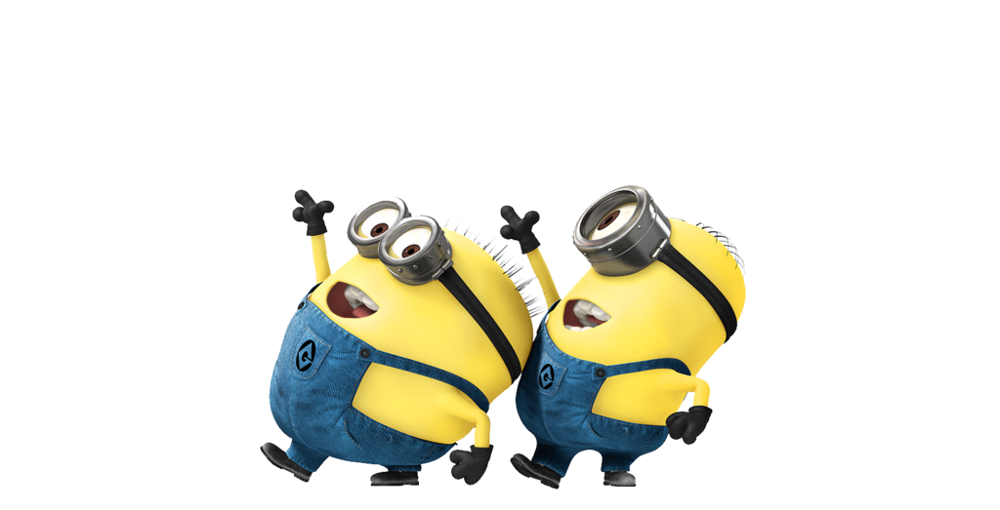

| home | about me |
| activities | outputs |
My first quarter in Grade 9 wasn't that bad. I remember genuinely struggling badly during my first quarter in Grade 8, only a little during Grade 7, but Grade 9 was just alright. Grade 8 felt especially pressuring since I was put in the first section, where all my classmates were achievers, but now, being evicted from the star section and being in a section with all my friends made it less traumatizing. I felt like I didn't need to go all out on my studies and just have a fun time in school.
Subjects-wise, this first quarter was kinda okay. I have always been a giant nerd in ICT. My mom, being an expert in computer, will absolutely not allow me failing a subject like ICT. This is exactly why this is the subject I'm most knowledgeable and confident in, even since I enrolled in LPSci. The rest of the subjects aren't too bad. I'm very weak in subjects that focus on memorization and book definitions, namely Science, MAPEH, and ESP, although I'm somewhat better in application-type subjects like English, Math, and ICT.
Overall-wise, honestly, I'm glad I got into this section. Like I said, being in the star section last year only pressured me more, but now, being downgraded to a section where all my friends are at definitely depleted that pressure by a lot. Sure, a small part of me is sad from the fact that I was kicked from star section, but I'd honestly take what I got right now rather than go through all the pressure again.
I'd 100% say that I had a blast in my first quarter of Grade 9. I had some complications here and there, but it was overall a really fun quarter for me. Here's to more quarters like this!!
